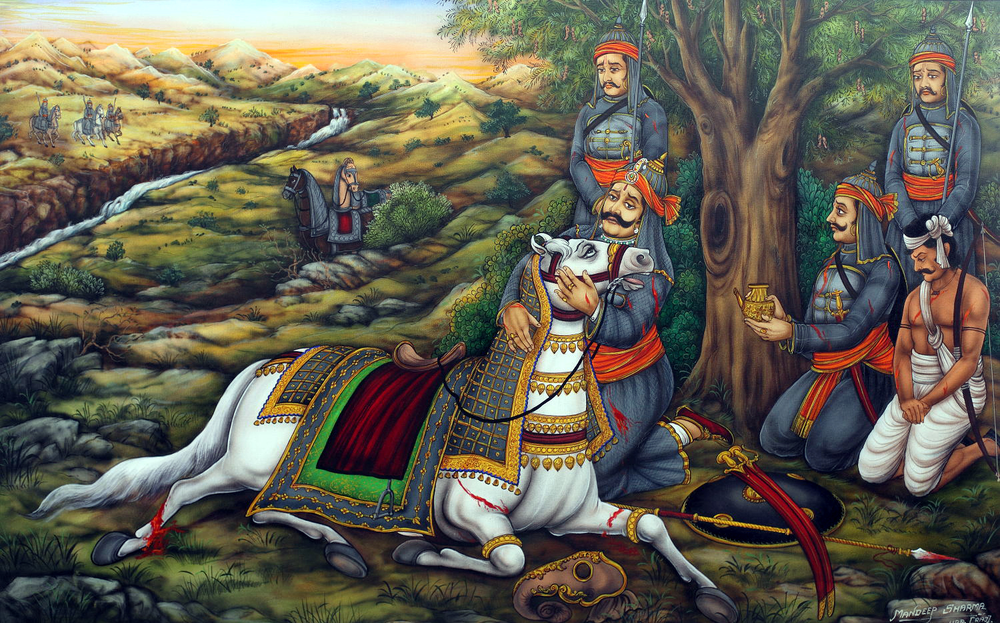
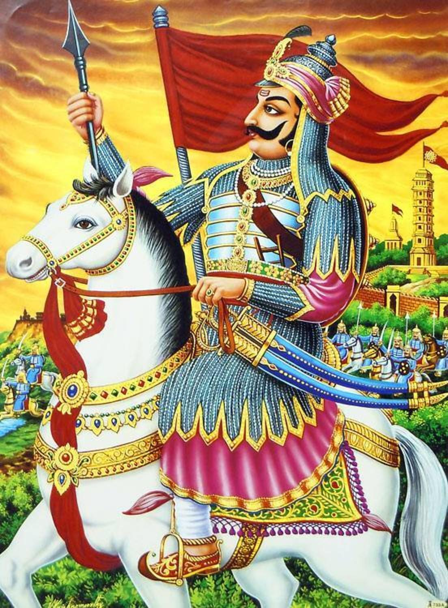
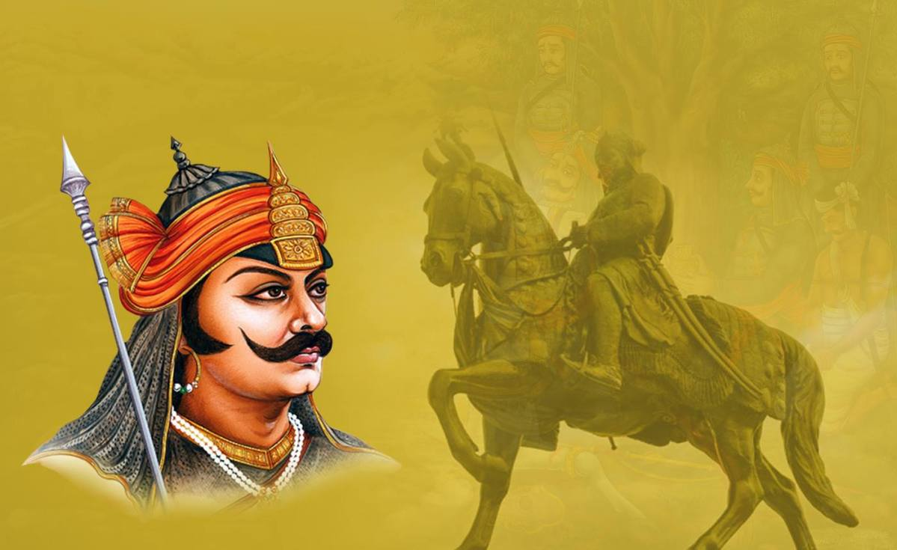
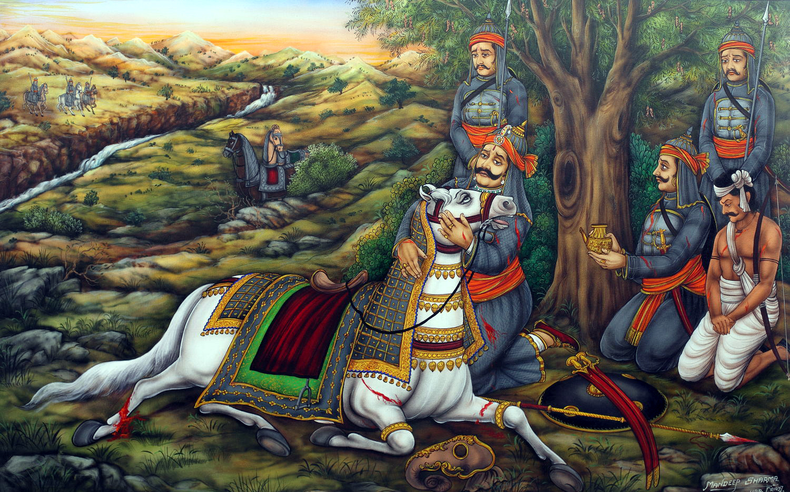
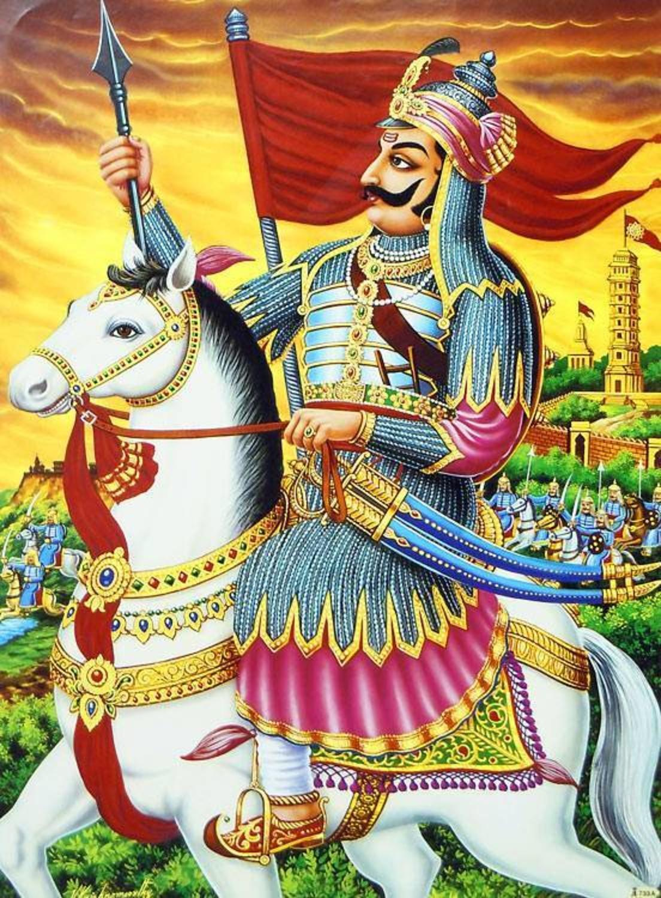
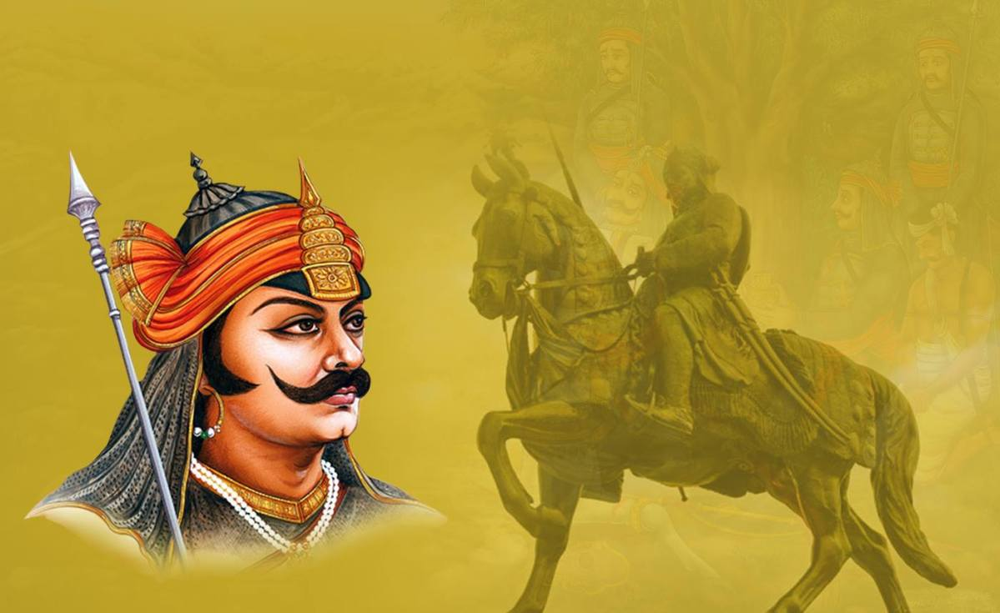

Rangeelo Rajasthan

The history of human settlement in the west Indian state of Rajasthan dates back to about 5,000 years ago. This region was inhabited during great floods after the ice age as well. This area was known as Matsya kingdom. It was the site of the Indus Valley Civilization. The early medieval period saw the rise of many Rajput kingdoms like Pratihars, Chauhans of Ajmer, Guhilot ( also known as Gohil ) and Sisodias of Mewar, Shekhawats of Shekhawati Sikar, Rathores of Marwar. And some Jat kingdoms of Sinsinwars of Bharatpur, Deswals, Bamraulias and Ranas of Dholpur, Godaras , Saharans, Punias, Johiya of Jangaldesh. Location of Rajasthan The Pratihar Empire acted as a barrier for Arab invaders from the 8th to the 11th century.it was the power of the Pratihara army that effectively barred the progress of the Arabs beyond the confines of Sindh, their only conquest for nearly 300 years. After Matsya kingdom this area was known as Rajputana around the time when the Kachwaha migrated to the region.s The Kachwahas continued to assist their Rajput allies in many Fatal battles including First Battle of Tarain and later in the disastrous Second Battle of Tarain. The last time where Kachwahas fought for Rajputs was under Rana Sanga of Chittor in the Battle of Khanwa. Gohils and Sisodia of Chittor, who continue to resist Mughals against heavy odds and gave rise to Maharana Pratap who became a symbol of Rajput valour along with Rana Sanga and Prithviraj Chauhan. After Indian Independence in 1947, the various princely states of Rajasthan were integrated. Statue of Maharana Pratap in City Palace, Udaipur. The British made several treaties with rulers of Rajasthan and also made allies out of local rulers, who were allowed to rule their princely states. This period was marked by famines and economic exploitation.

Amar Singh Rathore (30 December 1613 – 25 July 1644) was the eldest son of Maharaja Gaj Singh of Marwar in seventeenth-century India. After he was disinherited and exiled by his family, he entered the Mughals' service. His legendary bravery and battle prowess resulted in elevation to a high rank in the imperial nobility and personal recognition by the emperor, who made him the subedar (governor) of a region that was directly ruled by the emperor himself, Nagaur. In 1644, he was enraged by an attempt by the emperor to levy a fine on him for an unauthorized absence. In the emperor's presence, he stabbed and killed Salabat Khan, who had been asked to collect the fine. He is celebrated in some popular ballads of Rajasthan, Western Uttar Pradesh and Punjab.
Bappa Rawal (c. 8th century) was a king of the Mewar kingdom in Rajasthan, India. The bardic chronicles describe him as a member of the Guhila Rajput Clan, and some of them consider him to be the founder of the Guhila dynasty. He is credited with repelling the Arab invasion of India. Different historians have identified him with various rulers of the Guhila dynasty, including Kalabhoja, Shiladitya, and Khumana.
Maharana Pratap or Pratap Singh (May 9, 1540 – January 19, 1597) was a Hindu Rajput ruler of Mewar, a region in north-western India in the present day state of Rajasthan. He belonged to the Sisodiya sept of Rajputs. In popular Indian culture, Pratap is considered to exemplify the qualities like bravery and chivalry to which Rajputs aspire, especially in context of his opposition to the Mughal emperor Akbar. The struggle between Rajput confederacy led by Pratap Singh, and the Mughal Empire under Akbar, has often been characterised as a struggle between Hindus and the invading Muslims.
.jpg) 





Bappa Rawal (c. 8th century) was a king of the Mewar kingdom in Rajasthan, India. The bardic chronicles describe him as a member of the Guhila Rajput Clan, and some of them consider him to be the founder of the Guhila dynasty. He is credited with repelling the Arab invasion of India. Different historians have identified him with various rulers of the Guhila dynasty, including Kalabhoja, Shiladitya, and Khumana.
Suraj Mal (13 February 1707 – 25 December 1763) was a Jat ruler of Bharatpur in present-day state of Rajasthan. Under him, the Jat rule covered the present-day districts of Agra, Aligarh, Bharatpur, Dholpur, Etawa, Hathras, Mainpuri, Mathura, and Rohtak. A contemporary historian had described him as "the Plato of the Jat tribe" and by a modern writer as the "Jat Ulysses", because of his "political sagacity, steady intellect and clear vision." The people, under Suraj Mal, overran the Mughal garrison at Agra. Suraj Mal was killed in an ambush by the Rohilla troops on the night of 25 December 1763 near the Hindon River, Shahadra, Delhi.[5] In addition to the troops stationed at his forts, he had an army of 25,000 infantry and 15,000 cavalry when he died.
Maharana Kumbha ("Hindu Surrtran" & "Abhinav Bharta Charya" or Kumbhakarna Singh, died 1468 AD) was the ruler of Mewar, a state in western India, between 1433 and 1468 AD, and belonging to the Sisodia clan of Rajputs. Kumbha was a son of Rana Mokal of Mewar by his wife Sobhagya Devi, a daughter of Jaitmal Sankhla, the Parmara fief-holder of Runkot in the state of Marwar. Rana Kumbha was the vanguard of the fifteenth century Hindu resurgence in north-western India. A very tall and powerful man, he was about 8 feet tall; he held the Hindu flag flying high in an age when several Hindu kings like Kapilendradeva of east India, Deva Raya II of south India and Man Singh Tomar of central India defeated the Turkic invaders in different parts of India and expanded their kingdoms. Mewar was one of the major states ruled by a Hindu ruler and owing sovereignty to no one but the Lord Eklingaji (Siva).
.

.jpg)
.jpg)
.jpg)